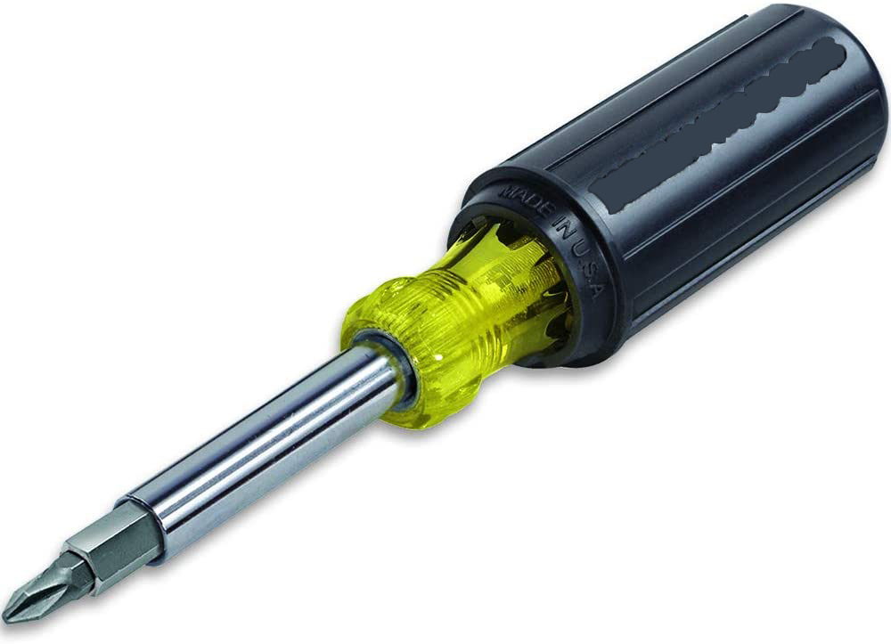

Option 1
Option 1

11-in-1 Multi-Bit Screwdriver with 8 Bits, 3 nut driver sizes and STRONG Grip Handle
Option 2
Multi-bit screwdriver / nut driver shaft holds 8 popular tips and converts to 3 nut driver sizes
Includes industrial strength heat treated bits: 3/8-Inch, 5/16-Inch and 1/4-Inch nut drivers,
#1 and #2 Phillips, 1/4-Inch and 3/16-Inch slotted, T10 and T15 TORX, and #1 and #2 square recess
Interchangeable blade for fast and easy switch out; comfortable Cushion-Grip handle
Blast finish bit tips provide a firm hold and reduce cam-out; Search Cat. No. 32526 for a full set of replacement bits.